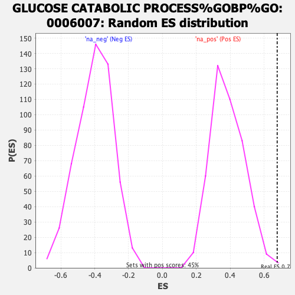

| | | Dataset | ER_ranked_genelist |
| Phenotype | NoPhenotypeAvailable |
| Upregulated in class | na_pos |
| GeneSet | GLUCOSE CATABOLIC PROCESS%GOBP%GO:0006007 |
| Enrichment Score (ES) | 0.6777942 |
| Normalized Enrichment Score (NES) | 1.759587 |
| Nominal p-value | 0.004474273 |
| FDR q-value | 0.29075572 |
| FWER p-Value | 0.996 |
Table: GSEA Results Summary
 Fig 1: Enrichment plot: GLUCOSE CATABOLIC PROCESS%GOBP%GO:0006007
Fig 1: Enrichment plot: GLUCOSE CATABOLIC PROCESS%GOBP%GO:0006007
Profile of the Running ES Score & Positions of GeneSet Members on the Rank Ordered List
| SYMBOL | RANK IN GENE LIST | RANK METRIC SCORE | RUNNING ES | CORE ENRICHMENT | | 1 | PGK1 | 1 | 10.262 | 0.2789 | Yes |
| 2 | PKM | 53 | 4.886 | 0.4077 | Yes |
| 3 | HK1 | 80 | 4.309 | 0.5228 | Yes |
| 4 | ENO2 | 275 | 2.851 | 0.5853 | Yes |
| 5 | PFKP | 376 | 2.418 | 0.6432 | Yes |
| 6 | FOXK2 | 1242 | 1.122 | 0.6067 | Yes |
| 7 | TPI1 | 1255 | 1.112 | 0.6360 | Yes |
| 8 | ALDOC | 1297 | 1.079 | 0.6622 | Yes |
| 9 | HK2 | 1708 | 0.818 | 0.6526 | Yes |
| 10 | ENO3 | 1814 | 0.765 | 0.6653 | Yes |
| 11 | PFKM | 1905 | 0.716 | 0.6778 | Yes |
| 12 | PGAM2 | 2424 | 0.502 | 0.6513 | No |
| 13 | GAPDHS | 2825 | 0.381 | 0.6307 | No |
| 14 | FOXK1 | 3650 | 0.215 | 0.5727 | No |
| 15 | LRP5 | 6410 | -0.090 | 0.3614 | No |
| 16 | ALDOA | 6746 | -0.124 | 0.3388 | No |
| 17 | PGAM1 | 8819 | -0.389 | 0.1889 | No |
| 18 | GPI | 9926 | -0.606 | 0.1197 | No |
| 19 | ENO1 | 11417 | -1.089 | 0.0339 | No |
| 20 | GAPDH | 11691 | -1.230 | 0.0462 | No |
| 21 | PFKL | 12326 | -1.828 | 0.0468 | No |
Table: GSEA details [plain text format]

Fig 2: GLUCOSE CATABOLIC PROCESS%GOBP%GO:0006007: Random ES distribution
Gene set null distribution of ES for GLUCOSE CATABOLIC PROCESS%GOBP%GO:0006007